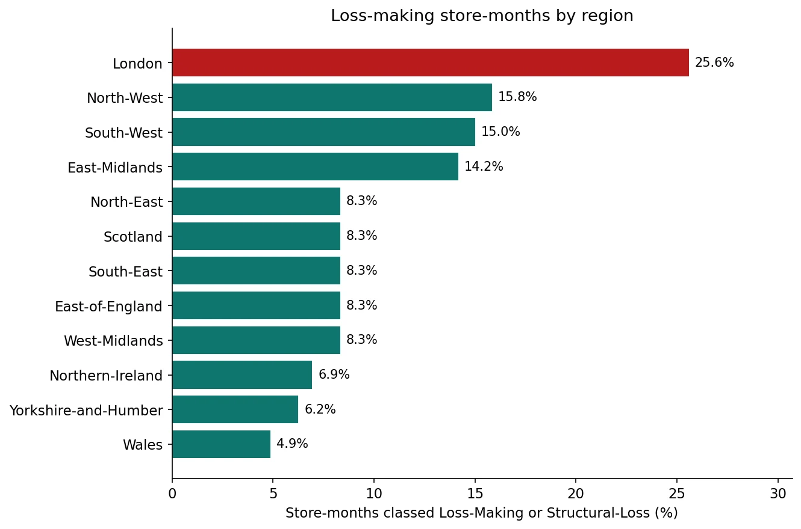
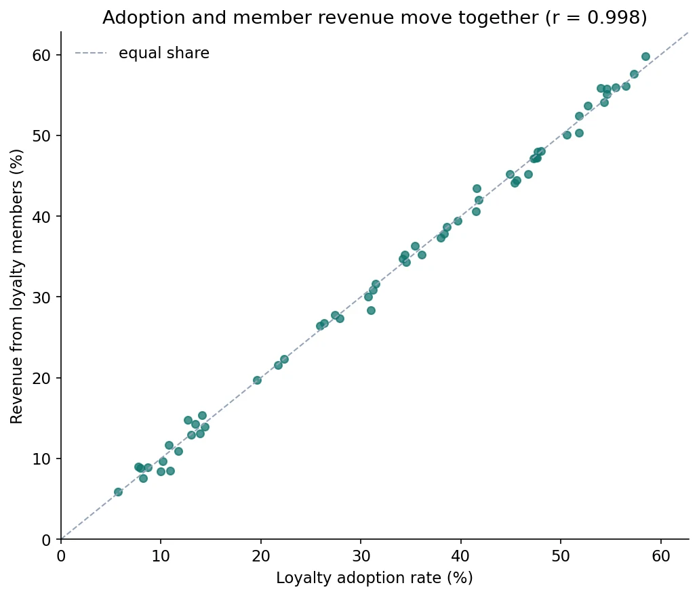
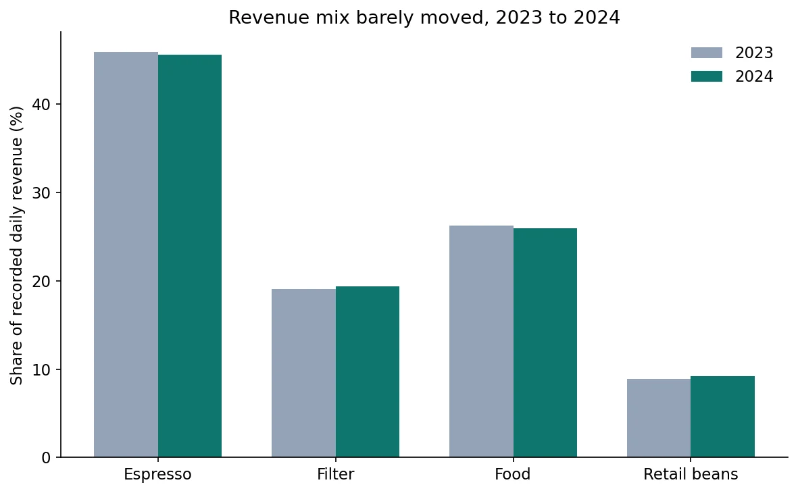
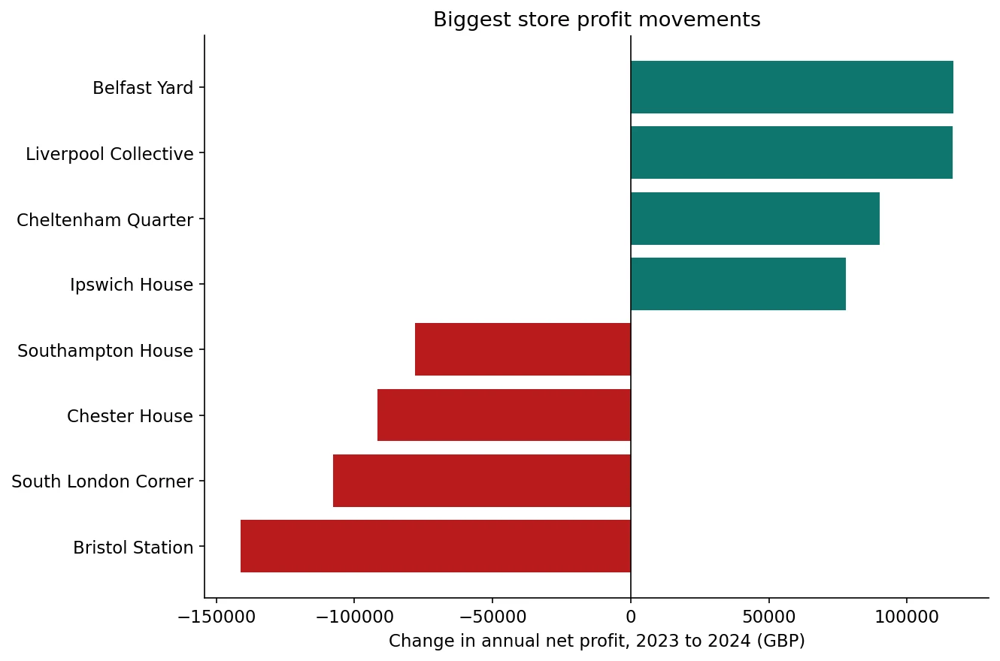

SUNRISE COFFEE PERFORMANCE REVIEW
The margin story behind 60 UK coffee shops, and why the estate average hides a London problem.
Python · pandas · matplotlib · Excel · Data modelling






6 SCREENSHOTS, SCROLL TO SEE MORE →
rev = float(m.total_monthly_revenue_gbp.sum()) profit = float(m.net_profit_gbp.sum()) return { class="tok-str">"revenue_gbp": rev, class="tok-str">"net_profit_gbp": profit, class="tok-str">"net_profit_margin_pct": profit / rev * 100, class="tok-str">"cogs_gbp": float(m.total_monthly_cogs_gbp.sum()), class="tok-str">"rent_gbp": float(m.monthly_rent_gbp.sum()), class="tok-str">"staffing_gbp": float(m.monthly_staffing_cost_gbp.sum()), class="tok-str">"loyalty_redemption_gbp": float(m.loyalty_redemption_cost_gbp.sum()), }
Go deeper
Business insights
The question, the evidence and what I would do about it, in plain language.
Technical documentation
The data model, formulas and measures, cleaning steps, and why I chose each visual.
THE PROBLEM
A two-year trading extract covering 60 stores asked which formats and regions drive profit, whether loyalty members spend more, and how the revenue mix and seasonality behave ahead of a 2025 expansion plan.
APPROACH
I rebuilt the analysis from the five raw CSVs rather than trusting the supplied workbook. A deterministic Python pipeline joins the dimensions to the facts, computes estate, region, format, loyalty, product-mix and store-movement cuts, and writes one summary JSON plus six titled charts. The workbook's conflicting KPI layer is documented as a source issue.
OUTCOME
The estate made £16.88M net profit on £89.69M revenue at an 18.8 percent margin. London sits at 8.5 percent margin with 25.6 percent of its store-months loss-making. Loyalty members supply 33.2 percent of revenue, but adoption has no useful link to transaction value. Food share fell slightly rather than growing.